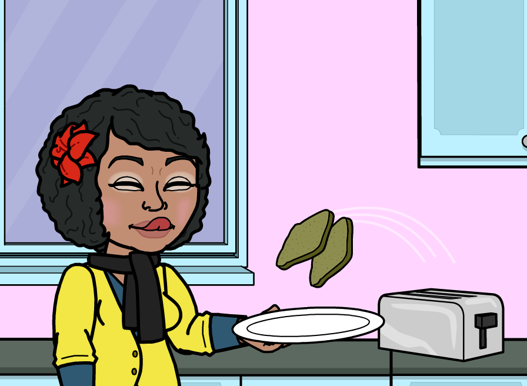

Programming makes me hungry!
Quick, Everyone write the steps you take to make a PB&J Sandwich.
Go on, I'll wait.

.........Ok, how many steps were there? 5, 10? 50?? do you think if you gave this list of instructions that an alien from another planet would be able to follow them? Programming is the process of telling a computer what to do, much like it would be to tell an alien, because you're giving the instructions, AND you're defining the environment around you, at the same time!
There are many different kinds of programming LANGUAGES, and what I've been learning so far has been the RUBY language. Ruby is built upon a few concepts that come from what is called Object-Orientation. Object Oriented Program focuses on everything being built through Objects. Objects are able to "learn" behaviors, and through that, change. Objects hold data, and can be called upon to take actions called methods to function.
There are other kinds of programming paradigms that programming languages are built upon (think of it like latin-based languages vs. sino-tibetan languages) one of which is called Functional Programming. As the name suggests, this paradigm is all about prioritizing the process of carrying out functions, and ensuring that there cannot be alterations to those functions, or the environment the functions work under, which is called a stateless environment.
In getting more info about this topic, I found the best comparison actually came from the book we've been reading on Ruby, "Practical Object-Oriented Design"The world is procedural. Time flows forward and events, one by one, pass by. Your morning procedure may be to get up, brush your teeth, make coffee, dress, and then get to work. These activities can be modeled using procedural software; because you know the order of events you can write code to do each thing and then quite deliberately string the things together, one after another.
The world is also object-oriented. The objects with which you interact might include a spouse and a cat, or an old car and a pile of bike parts in the garage, or your ticking heart and the exercise plan you use to keep it healthy. Each of these objects comes equipped with its own behavior and, while some of the interactions between them might be predictable, it is entirely possible for your spouse to unexpectedly step on the cat, causing a reaction that rapidly raises everyone’s heart rate and gives you new appreciation for your exercise regimen.
In a world of objects, new arrangements of behavior emerge naturally. You don’t have to explicitly write code for the spouse_steps_on_cat procedure, all you need is a spouse object that takes steps and a cat object that does not like being stepped on. Put these two objects into a room together and unanticipated combinations of behavior will appear.
From this explanation, and what I've learned so far, I know that Object Oriented Programming is very Dynamic. What i find interesting about Functional Programming is the idea that it is less "buggy" because of the strict separation between function and data. How these two paradigms work together in some programming languages will be interesting to continue learning about, but I feel so far that Object-Oriented Programming allows for a more malleable program, and THAT means, more creative sandwiches for everyone!
 Tweet
Tweet
 Plus
Plus